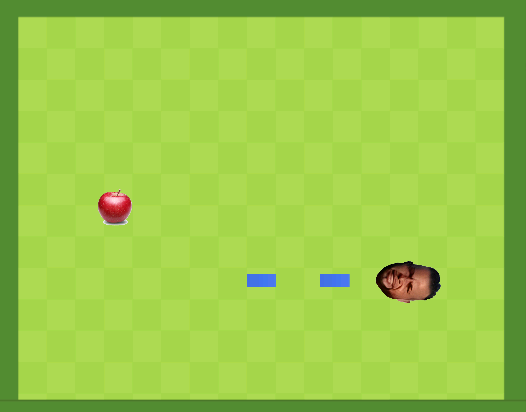

<!DOCTYPE html>
<html lang="es"></html>
<head>
    <meta charset="UTF-8">
    <meta name="viewport" content="width=device-width, initial-scale=1.0">
    <title>Recuperación M8</title>
    <link rel="stylesheet" href="css/estilos.css">
</head>
<body>
    <header>
        The ChurumbSnake 
    </header>
    
    <main class="contenedor">
        <section class="contenido"><p><strong>¿Qué es el ChurumbSnake?</strong></p><p>The ChurumbSnake es un popular juego creado por Airán Rodríguez Vizcaíno en el que una Serpiente llamada Churumb debe comer el máximo de fruta posible sin golpear la pared o con el mismo, ya que el va creciendo por cada fruta que coma</p>
        <h><strong>Personajes / Unidades</strong></h> <p><strong>ChurumbSnake:</strong> Este es el jugador principal. Debe comerse la mayor cantidad de manzanas posible sin golpearse contra la pared ni consigo mismo.</p> 
    <p><strong>Manzana:</strong> Estos son los coleccionables. Esto es lo que el jugador necesita comer para crecer.</p> </section>
        <aside class="barra-lateral"></aside>
    </main>
    <footer>
         SMX2 2023/24
    </footer>
</body>
</html>